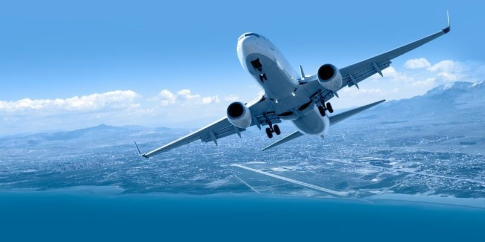

Transporte aéreo
El transporte aéreo o transporte por avión es el servicio de trasladar de un lugar a otro, pasajeros o cargamento, mediante la utilización de aeronaves. Este modo de transporte, en principio, se pensó y desarrolló únicamente para pasajeros; sin embargo, gracias al uso de contenedores aéreos y al diseño de nuevos aviones destinados a carga.El volumen de mercancías transportado por este medio se incrementa año tras año. Los adelantos de la navegación aérea, de las telecomunicaciones y de las facilidades electrónicas han permitido que la aviación haya progresado de forma asombrosa.
